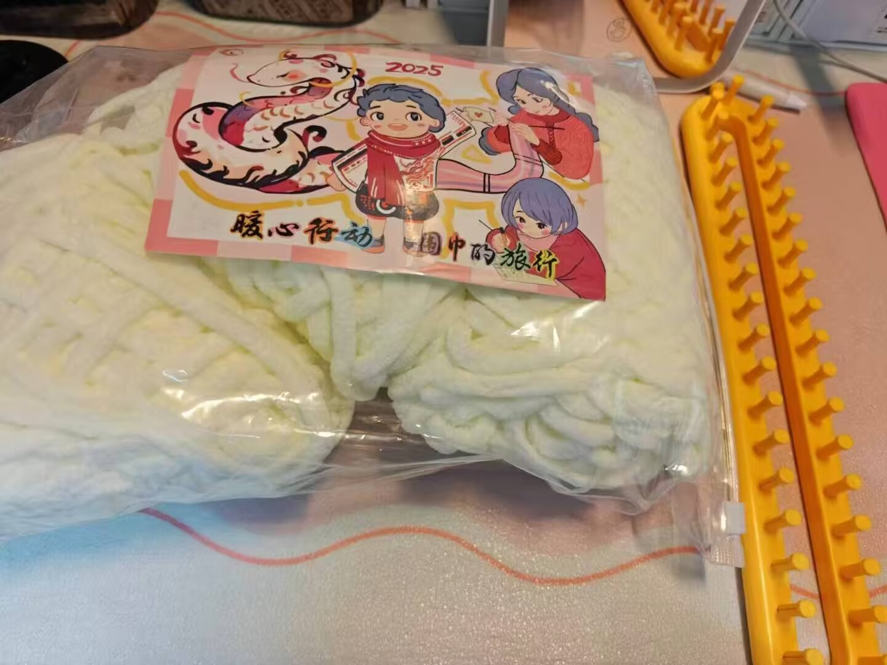
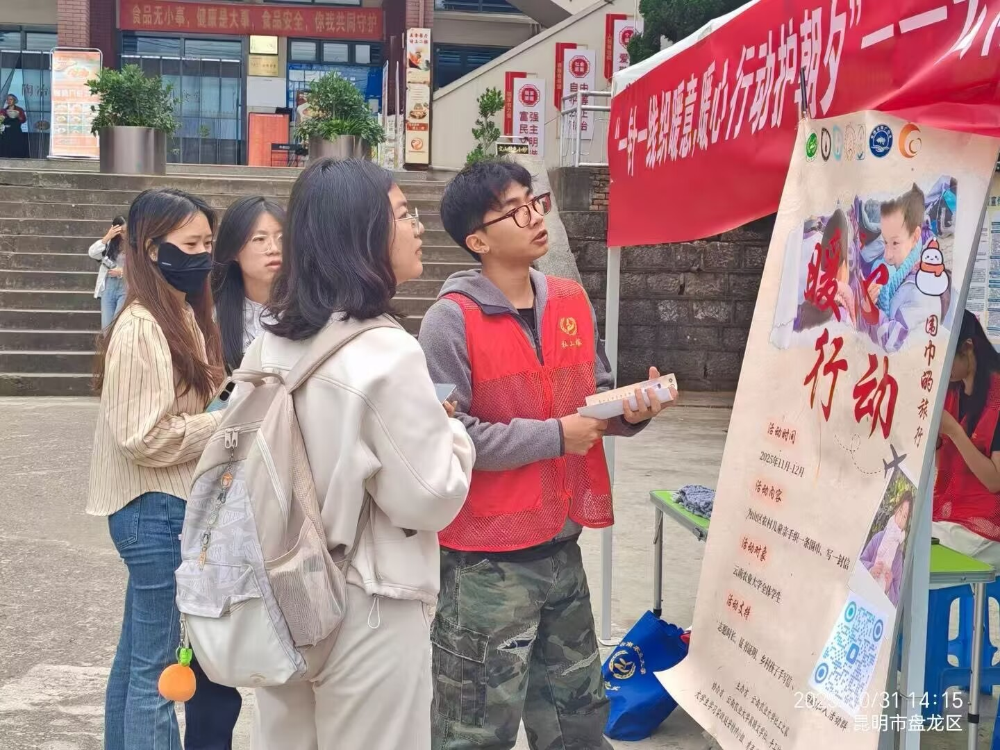
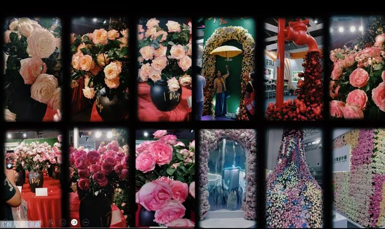
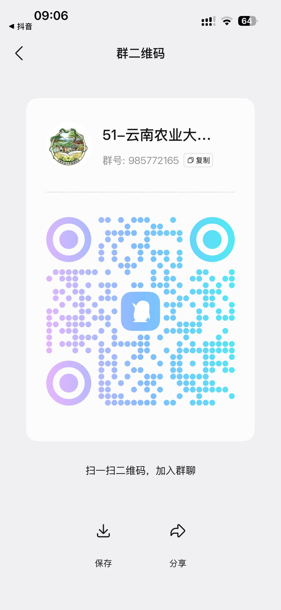

01 / 暖心行动“一针一线织暖意，
暖心行动护朝夕”活动
本活动以公益志愿服务为核心，组织学子手工制作暖心织物，传递温情关怀，践行青年社会责任，凝聚社团公益力量，覆盖全校众多学生，营造友善温暖的校园氛围。

行程 01 / 关于协会
旅游协会是在校团委、校学生社团联合会统一管理，人文社会科学学院专业教师指导下设立的校级文旅实践类学生社团，面向全校各专业、各年级学生开放入会。
协会立足云南民族文旅资源禀赋，深度贴合我校“耕读至诚”办学内核，坚持以文旅融合、生态研学为核心发展方向，秉持“知行游学、以旅育人”的建会宗旨，拥有校内极具辨识度的品牌赛事——旅游路线规划大赛，形成成熟的社团核心名片。
社团以传播文明生态旅游理念为根本，搭建旅游文化交流学习载体，打通文旅理论与社会实践的成长通道，凝聚热爱旅行、文旅策划、民族文化研究的青年学子。协会深耕农旅融合特色发展，致力于拓宽学生视野、锤炼综合实践素养，打造贴合云农办学特色的青年文旅交流阵地。
品牌赛事 / 核心名片
把一处风景读懂，把一条路线讲好。以云南民族文旅资源为底图，将文化洞察、生态意识与策划能力写进一份可以真正出发的旅行方案。
行程 02 / 部门组成
从路线构想到活动落地，每个部门都是协会行程图上不可缺少的一站。
负责旅游路线规划大赛等活动方案撰写，构思文旅活动创意，完善活动流程。
创意构思统筹线下游学、赛事落地执行，协调场地与人员，保障各项文旅活动顺利开展。
落地执行运营社团新媒体，制作海报文案，对外宣传赛事与游学活动，扩大社团影响力。
传播故事管理社团经费，记录收支明细，核算活动物资开销，定期公示财务账目。
后勤保障负责社员招新、考勤管理，整理成员档案，组织内部培训与评优考核。
凝聚团队行程 03 / 精彩瞬间
每一次交流、每一份心意、每一个共同完成的现场，都是协会珍藏的行程印记。
行程 04 / 精彩活动

01 / 暖心行动本活动以公益志愿服务为核心，组织学子手工制作暖心织物，传递温情关怀，践行青年社会责任，凝聚社团公益力量，覆盖全校众多学生，营造友善温暖的校园氛围。

02 / 家乡故事面向全校征集家乡文旅、风土主题图文创作，挖掘各地民俗风光，锻炼学生文旅宣传策划能力，贴合协会旅游专业特色，以作品展现多彩地域文化。
